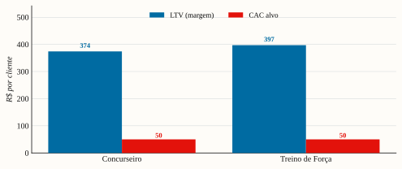

Vencer pela combinação que ninguém junta — método + estética + recorrência —, com crescimento autofinanciado puxado por conteúdo orgânico.
| LTV de margem / cliente | R$ 374–397 |
|---|---|
| LTV/CAC (orgânico) | 7–8× |
| North Star | clientes ativos recorrentes |
| Crescimento | autofinanciado |
Construir uma marca de planners-método para dois nichos de alto engajamento, vencendo pela combinação que ninguém junta — método proprietário + estética premium + recorrência —, com crescimento 100% autofinanciado puxado por conteúdo orgânico.
A descoberta que reorienta tudo: o produto é consumível (o concurseiro recompra 3–4×/ano; o
atleta, ~2,5×/ano). Logo isto não é venda única, é base recorrente — LTV de margem de
R$ 374–397/cliente e um mercado em fluxo de ~2,3 M un/ano (~R$ 267 M/ano) [estimativa].
A consequência estratégica: reter vale mais que adquirir, e a vantagem real não é o produto
físico (barreira de entrada baixa), e sim marca + método + comunidade + recompra.

Porter mostra barreira de entrada baixa (qualquer um imprime um planner) — então o produto não é o fosso. O fosso é construído, em ordem de força:
Implicação: investir cedo em conteúdo, marca e retenção (o fosso), não em ter o planner.
| Forças | Fraquezas |
|---|---|
| Fundadores = ICP (credibilidade + conteúdo) · redes sociais/conteúdo viral comprovado (irmã) · finanças/estratégia (Daniel, economista) · design in-house · conteúdo já rascunhado · perpétuo + método · recorrência (LTV alto) | Audiência ainda a construir nos nichos · tráfego pago e ops em escala não são o forte · capital pequeno · dependência de 2 pessoas |
| Oportunidades | Ameaças |
| Whitespace no Treino · ciclo de concursos 2027 · tendência registro analógico · LTV permite escalar aquisição · catálogo expansível | Baixa barreira de entrada (cópias) · substitutos digitais grátis · reação do Juspodivm · risco de plataforma (algoritmo/ban) · execução com time enxuto |
| Vetor | Movimento | Quando |
|---|---|---|
| Penetração de mercado | Vender mais aos 2 nichos atuais; maximizar recompra e indicação | Anos 1–2 (foco) |
| Desenvolvimento de produto | Refis/variações (capas, temas), 3º SKU (ex.: planner de idiomas/OAB ou diário de corrida); combos/assinatura | Ano 2–3 |
| Desenvolvimento de mercado | Novos nichos de estudo/treino; marketplace como canal de volume; B2B (cursinhos/academias) com co-branding | Ano 3+ |
| Diversificação | Evitar no horizonte; só após marca consolidada | — |
O catálogo recorrente (penetração + produto) é o caminho de maior retorno e menor risco — alavanca o mesmo público e a mesma marca.
| Bloco | Conteúdo |
|---|---|
| Segmentos de clientes | Concurseiro de alto desafio (25–40); praticante sério de força (25–45). Ambos: engajados, recompram, valorizam método + estética. |
| Proposta de valor | Planner-método físico premium e perpétuo: estudar/treinar com método e constância sem montar planilha nem depender de tela. |
| Canais | Orgânico (Instagram/TikTok) → lista própria → checkout próprio + pix (D2C). Marketplace só p/ descoberta; afiliados/micro-influenciadores na escala. |
| Relacionamento | Comunidade + conteúdo de método; ciclo de recompra (lembrete/oferta de reposição, combos/assinatura); prova social. |
| Fontes de receita | Venda direta dos 2 SKUs (R$ 109–119), recorrente (3–4×/ano Concurseiro; ~2,5× Treino); futuro: refis, 3º SKU, B2B. |
| Recursos-chave | Método proprietário + conteúdo dos fundadores; design in-house; marca/comunidade; caixa autofinanciado. |
| Atividades-chave | Produção de conteúdo orgânico; desenvolvimento de método/produto; gestão de reposição (make-to-demand); atendimento/retenção. |
| Parcerias-chave | Gráficas BR (3 cotações; offset na escala); micro-influenciadores de nicho; contador; (Fase 2) fornecedor China + despachante. |
| Estrutura de custos | Produção (R$ 45 → 28/un na escala); marketing (orgânico ~tempo; pago só na escala); pró-labore (Estratégia B); tributos (MEI → Simples); ops/ferramentas. |
Documento estratégico de uso interno. Premissas de recorrência e mercado a validar com survey
próprio. Conectado ao EVEF (estudo-viabilidade-economica), ao estudo de mercado e ao modelo
viabilidade-planners-v2.xlsx (abas LTV & Recorrência, Pró-labore AxB, EVEF).
Marcações de confiança usadas no texto — [confirmado]: fonte primária datada e verificável · [estimativa triangulada]: ≥2 fontes convergentes, sem confirmação formal · [a confirmar]: faixa de mercado, não apresentada como fechada.
Estudo de mercado, EVEF e modelo viabilidade-planners-v2.xlsx (abas LTV & Recorrência, EVEF, Pró-labore AxB). Premissas de recorrência a validar por survey próprio.